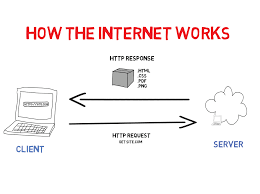

To start using PHP, you can:
To run PHP in your Computer, you will need to install a web server like Apache and a database like MySQL – and both are supported by XAMPP.
OR
Find a web server with PHP and MySQL support
XAMPP stands for
It is a local server that can run smoothly on our personal computer, and is accepted in both Windows and Linux. It also helps you test websites and see if they work before actually publishing them to a web server.
Follow the steps below to install:
Set PHP 8 to System's Path:
php --version and click enter. You should see something
similar to this:C:\xampp\htdocs directoryC:\xampp\htdocs directoryindex.php in
C:\xampp\htdocs\webcapz<?php
echo "Hello World";
?>
A PHP script starts with <?php and ends with ?>.
Since PHP files can contain text, HTML, CSS, JavaScript, and PHP code, a PHP script can be placed anywhere in the document.
Sometimes the closing ?> is omitted if the rest of the code is php
PHP statements must end with a semicolon (;).
<!DOCTYPE html>
<html>
<body>
<h1>My first PHP page</h1>
<p><?php
echo "Hello World!";
?></p>
</body>
</html>
In PHP, keywords (e.g. if, else, while, echo, etc.), classes, functions, and user-defined functions are not case-sensitive.
In the example below, all three echo statements below are equal and legal:
<!DOCTYPE html>
<html>
<body>
<?php
ECHO "Hello World!<br>";
echo "Hello World!<br>";
EcHo "Hello World!<br>";
?>
</body>
</html>
But All variable names are case-sensitive!
Look at the example below; only the first statement will display the value of the $color
variable! This is because $color, $COLOR, and $coLOR are treated
as three different variables:
<!DOCTYPE html>
<html>
<body>
<?php
$color = "red";
echo "My car is " . $color . "<br>";
echo "My house is " . $COLOR . "<br>";
echo "My boat is " . $coLOR . "<br>";
?>
</body>
</html>
A comment in PHP code is a line that is not executed as a part of the program. Comments can be used to:
In VSCode editor highlight the desired code and press ctrl + c + k
Single Line
<!DOCTYPE html>
<html>
<body>
<?php
// This is a single-line comment
# This is also a single-line comment
?>
</body>
</html>
Multi Line
<!DOCTYPE html>
<html>
<body>
<?php
/*
This is a multiple-lines comment block
that spans over multiple
lines
*/
?>
</body>
</html>
PHP runs on the server and output html to the browser but whatever is enclosed in the
<?php ?> tag does not appear on the browser except we display/output it. This
includes:
echo: outputs values but has no return value
<?php
echo "Hello World ---";
echo ("Hello World 2");
$username = "Ilodigwe Chinaza";
echo "Hello and Welcome ".$username;
echo "Hello and Welcome $username";
?>
print: outputs values and has a return value of 1 so it can be used in expressions. e.g
<?php
print "Hello World -----";
$our_variable = print("Hello World 2 ------");
echo $our_variable;
?>
printf(format,arg1,arg2,arg++):
Outputs a formatted string. This function works "step-by-step". At the first % sign, arg1 is
inserted, at the second % sign, arg2 is inserted, etc.
<?php
$number = 9;
$str = "Beijing";
printf("There are %u million bicycles in %s.",$number,$str);
related functions include
sprintf(), vprintf(), vsprintf(), fprintf() and
vfprintf()
print_r: Print the information about some variables in a more
human-readable way:
<?php
$b = array("Peter"=>"35", "Ben"=>"37", "Joe"=>"43");
print_r($b);
?>
var_dump: Dump information about different variables. but not as human readable as
print_r
<?php
$b = "Hello world!";
$e = array(32, "Hello world!", 32.5, array("red", "green", "blue"));
var_dump($e);
echo "<br>";
// Dump two variables
var_dump($e, $b);
echo "<br>";
?>
print and echo statements can be used with or without parentheses
Variables are like containers for storing data.
Unlike other programming languages, PHP has no command for declaring a variable. It is created the moment you first assign a value to it.
A variable starts with the $ sign, followed by the name of the variable:
<?php
$txt = "Hello world!";
$x = 5;
?>
Rules for PHP variables:
_$age and $AGE are two different variables)
<?php
$username = "Ilodigwe Chinaza";
$num1 = 2;
$num2 = 8;
$sum = $num1 + $num2;
echo "Hello and Welcome ".$username;
echo "<br>";
echo "The sum of $num1 and $num2 is $sum";
?>
PHP is a Loosely Typed Language:
In the example above, notice that we did not have to tell PHP which data type the variable is.
PHP automatically associates a data type to the variable, depending on its value. Since the data types are not set in a strict sense, you can do things like adding a string to an integer without causing an error.
In PHP 7, type declarations were added. This gives an option to specify the data type expected when declaring a function, and by enabling the strict requirement, it will throw a "Fatal Error" on a type mismatch.
You will learn more about strict and non-strict requirements, and data type declarations in the PHP Functions chapter.
Constants are like variables except that once they are defined they cannot be changed or undefined. Unlike variables, constants are automatically global across the entire script.
A valid constant name starts with a letter or underscore (no $ sign before the constant name).
To create a constant, use the define() function.
Syntax: define(name, value)
Parameters:
name: Specifies the name of the constantvalue: Specifies the value of the constant<?php
define("GREETING", "Welcome to W3Schools.com!");
echo GREETING;
?>
The scope of a variable is the part of the script where the variable can be referenced/used. PHP has three different variable scopes:
A variable declared within a function has a LOCAL SCOPE and can only be accessed within that function:
<?php
function myTest() {
$x = 5; // local scope
echo "<p>Variable x inside function is: $x</p>";
}
myTest();
// using x outside the function will generate an error
echo "<p>Variable x outside function is: $x</p>";
?>
A variable declared outside a function has a GLOBAL SCOPE and can only be accessed outside a function:
<?php
$x = 5; // global scope
function myTest() {
// using x inside this function will generate an error
echo "<p>Variable x inside function is: $x</p>";
}
myTest();
echo "<p>Variable x outside function is: $x</p>";
?>
global KeywordThe global keyword is used to access a global variable from within a function.
To do this, use the global keyword before the variables (inside the function):
<?php
$x = 5;
$y = 10;
function myTest() {
global $x, $y;
$y = $x + $y;
}
myTest();
echo $y; // outputs 15
?>
PHP also stores all global variables in an array called $GLOBALS[index]. The index holds the name of
the variable. This array is also accessible from within functions and can be used to update global variables
directly.
The example above can be rewritten like this:
<?php
$x = 5;
$y = 10;
function myTest() {
$GLOBALS['y'] = $GLOBALS['x'] + $GLOBALS['y'];
}
myTest();
echo $y; // outputs 15
echo $GLOBALS['y']; // outputs 15
?>
static Keyword:Normally, when a function is completed/executed, all of its variables are deleted. However, sometimes we want a local variable NOT to be deleted. We need it for a further job.
To do this, use the static keyword when you first declare the variable:
With the static keyword
<?php
function myTest() {
static $x = 0;
echo $x;
$x++;
}
myTest();
myTest();
myTest();
?>
Some predefined variables in PHP are "superglobals", which means that they are always accessible, regardless of scope - and you can access them from any function, class or file without having to do anything special.
The PHP superglobal variables are:
$GLOBALS$GLOBALS is a PHP super global variable which is used to access global variables from anywhere in the PHP script (also from within functions or methods).
PHP stores all global variables in an array called $GLOBALS[index]. The index holds the name of the variable. Like in the previous example.
$_SERVERThis is a PHP super global variable which holds information about headers, paths, and script locations.
<?php
echo $_SERVER['PHP_SELF'];
echo "<br>";
echo $_SERVER['SERVER_NAME'];
echo "<br>";
echo $_SERVER['HTTP_HOST'];
echo "<br>";
echo $_SERVER['HTTP_REFERER'];
echo "<br>";
echo $_SERVER['HTTP_USER_AGENT'];
echo "<br>";
echo $_SERVER['SCRIPT_NAME'];
echo $_SERVER['REQUEST_METHOD'];
?>
The full reference can be found here
$_REQUESTThis is a PHP super global variable which is used to collect data after submitting an HTML form.
<html>
<body>
<form method="post" action="<?php echo $_SERVER['PHP_SELF'];?>">
Name: <input type="text" name="fname">
<input type="submit">
</form>
<?php
if ($_SERVER["REQUEST_METHOD"] == "POST") {
// collect value of input field
$name = $_REQUEST['fname'];
if (empty($name)) {
echo "Name is empty";
} else {
echo $name;
}
}
?>
</body>
</html>